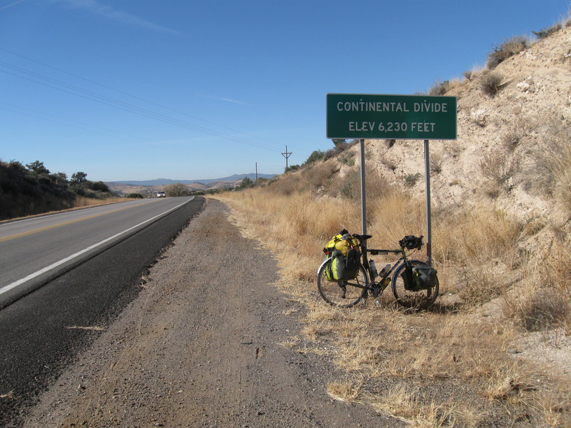
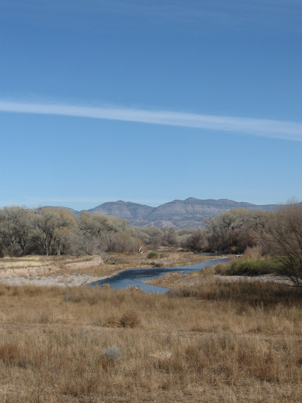
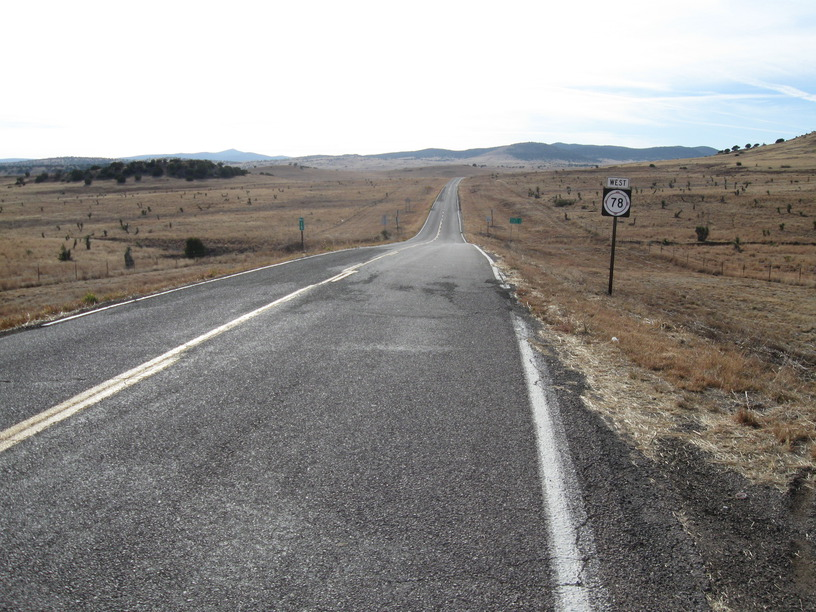
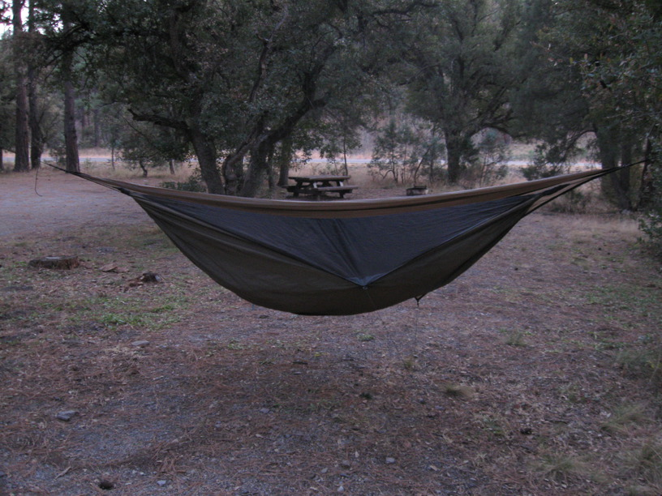
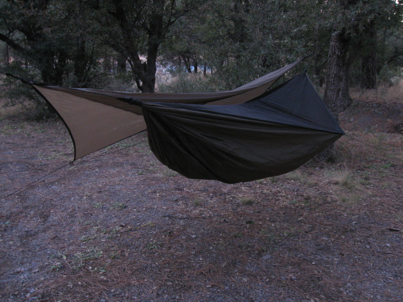

22 Nov 2008, Apache National Forest, AZ
Nothing much exciting today. I cruised out of Silver City after a few wrong turns to make a short 4-mile assault on the continental divide—my third crossing in as many days (& my last). Then I had a nice long gradual descent for the rest of the morning.
As I was nearing my campsite for the evening, I passed through Mule Creek, a tiny town just 5 miles from the AZ border. It's really just a post office—and a small one at that, probably <500 sq. ft.—but there were three people standing outside chatting. I asked if there was somewhere nearby to fill my water bottles & I ended up riding to one of their houses. The woman was very kind—she sat at the gate in her car until I caught up, then offered me a ride back to the house (along a bumpy dirt road, so I was happy to accept). Her house was beautifully decorated & very earthy—lots of wood & brick. Made me again think that I want a place "in the country" someday. A ranch would be nice . . .
I made it to Arizona—my twelfth & penultimate state—and I'm camping in the Apache National Forest. It's a nice campsite (although no water) & I've got it all to myself!
It's feeling like it won't be as cold here tonight as my past few nights. If I can get an early start tomorrow I might go for another 100+ mile day—I've got a lot of descent coming up...we'll see.




